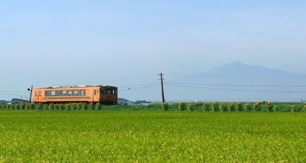

ﾉ ✪ω✪ ʅ
夏季的风铃列车,秋季的铃虫列车和冬天限定的暖炉列车
尤其是只在冬天特地时段开行的列车，因为车上装有带烟囱的旧式暖炉而被称为“暖炉列车”。暖炉里的炭火被烧得火热，还有香气四溢的烤鱿鱼，乘客们一边聊着天，一边欣赏窗外被大雪覆盖的一望无际的津轻平原，这会是一段温暖心灵的旅程。
想送你一片大自然
评什么论
{% for comment in comments %}
#}
{% endfor %}